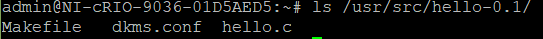
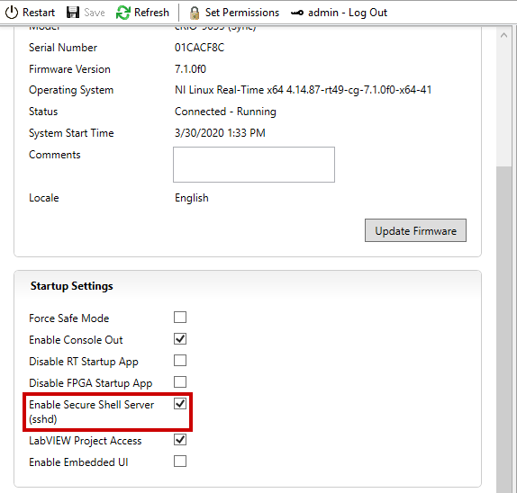
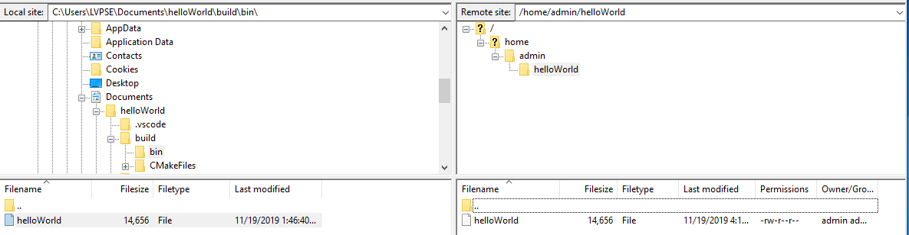

NI Linux Real-Time and opkg: Distributing DKMS-based Kernel Modules¶
Table of Contents
Introduction¶
Oftentimes it can be desirable to extend the functionality provided by the Linux kernel and have access to system resources at the kernel level instead of the user level. Examples of this include device drivers and adding new system calls. In the Linux world, this is often done through out-of-tree loadable kernel modules. This document will discuss how to create, package, and test loadable kernel modules with NI Linux Real-Time.
A Note on Support¶
This document is meant as a walkthrough of general Linux concepts within NI Linux Real-Time. As these concepts are general to any Linux system and the open source software used, NI Support will not provide assistance through Technical Support channels should problems be encountered. NI does not provide official support for modifying the kernel such as through the addition of loadable kernel modules. For more information on how NI provides support for NI Linux Real-Time, refer to the NI Linux Real-Time FAQ. If problems are encountered, posting to the NI Linux Real-Time Community or other Linux discussion boards is the recommended way to get further guidance.
Requirements¶
The following software and hardware are required to follow this tutorial:
NI Linux Real-Time System with one of the following:
NI Linux Real-Time 8.0.0 or newer
This can be checked in either NI MAX under System Information or in the output of the uname -r command on the Linux Real-Time device.
Access to the online NI Repositories or an offline version of the repo copied from the online NI Repositories
Source for a Linux Kernel Module
NI recommends using the “Hello, World!” kernel module
available herefor this tutorial. The file contains two directories:module_source – source files for a DKMS loadable kernel module
hello – the same module and required files formatted for *.ipk creation
DKMS, opkg, and Kernel Modules¶
Creating Kernel Modules¶
As with other modern Linux distributions of kernel version 2.6 and later, NI Linux Real-Time uses loadable kernel modules as the basis for extending the functionality in the kernel. These are typically binary object files with the special *.ko (kernel object) file extension denoting that the binary object links against the kernel.
Creating or obtaining source for these modules is much the same as for any other Linux distribution. While a simple “Hello, World!” example is provided for this tutorial, NI recommends reviewing The Linux Kernel Module Programming Guide before attempting to create or modify a Linux kernel module.
DKMS¶
There are two ways to handle distribution of a loadable kernel module: Distribute the compiled binaries (i.e., the *.ko file) for a specific kernel version or distribute the source code to be compiled for the kernel version on install. The former option has the disadvantage that a module will typically only run on the kernel that it is compiled against. That is, if the kernel version is upgraded or support for a new kernel version is desired the module will require being recompiled and repackaged for distribution.
To get around this limitation and implement the second more dynamic option, NI Linux Real-Time and many other distributions make use of Dynamic Kernel Module Support (DKMS). DKMS is an open source program that allows Linux kernel modules outside of the kernel source tree to be automatically rebuilt upon installation or upgrade of the Linux kernel. That is, the source is compiled against the kernel to be used dynamically.
By generating the kernel module dynamically, a single distribution can support multiple kernels. Additionally, kernel upgrades will be less likely to break or negatively impact the performance of the module. For these reasons, NI recommends using DKMS for managing any loadable kernel modules outside of the kernel source tree.
Opkg¶
Opkg is a light-weight package manager which uses the *.ipk format to install and manage packages on a filesystem. While slightly different, *.ipks are very similar to *.deb packages and are based on that standard. Due to the lightweight nature of opkg and its basis on a standard Linux package type, NI chose to use opkg as the package manager for NI Linux Real-Time.
This tutorial will cover the steps needed to use the opkg and opkg-build commands to create a package for distribution of a DKMS-based loadable kernel module. *.ipks can be created on any system with opkg-build installed. For simplicity, this tutorial uses a Linux Real-Time system. For more information on opkg, refer to the official documentation.
Configuring the System¶
Note: DKMS will already be installed when using NI Linux Real-Time Operating System versions 8.0.0 and later or when using a PXI Linux Real-Time controller. When using older systems, running the updateNIDriver commands on non-*.ipk systems can cause problems with DKMS.
Before starting, the required software and toolchains must be installed to the NI Linux Real-Time system used. This can be accomplished through console access to the device via a serial port, SSH, or direct access via a keyboard and monitor. For the screenshots in this tutorial, SSH is used via PuTTY.
Open a console to the NI Linux Real-Time system and log in as or switch to the admin user.
- Run the opkg update command to refresh the list of available packages.
- Install dkms for DKMS support if it’s not already installed. Note that this will also install GCC, the kernel headers (kernel-dev), and make as dependencies. If other development tools or dependencies are required for a given kernel module, those will need installed as well.
- Install the opkg-utils package to install the required tools for creating *.ipks.
Confirm that the installation completed successfully.
Source Files¶
To demonstrate building and testing a package containing a kernel module
this tutorial will use a simple “Hello, World!” module. This module will
print a kernel message when it loads and unloads to confirm that the
module is loaded. While this same process will apply to any kernel
module, NI recommends walking through the process for this simple module
before moving to more complex designs.
Kernel Module Source¶
The source for this “Hello, World!” module will consist of three main files:
hello.c – The C source code for the kernel module
Makefile – The makefile for the kernel module
dkms.conf – A sample dkms configuration file designed for the “Hello, World!” module
hello.c¶
This is C source code for a simple “Hello, World!” kernel module taken from the examples given in The Linux Kernel Module Programming Guide. Other simple kernel module source examples can be found in that document, and this source is based on the Hello World (part 2) section of that document.
The source code has been modified slightly to account for the default logging levels in the NI Linux Real-Time OS. That is, the printk functions have been modified to log at the KERN_NOTICE level rather than KERN_INFO level to more easily demonstrate logging functionality.
#include <linux/module.h>
#include <linux/kernel.h>
#include <linux/init.h>
static int __init hello_init(void)
{
printk(KERN_NOTICE "Hello world!\n");
return 0;
}
static void __exit hello_exit(void)
{
printk(KERN_NOTICE "Goodbye world!\n");
}
module_init(hello_init);
module_exit(hello_exit);
Makefile¶
This makefile, as with the C source file, is based on the examples given in the The Linux Kernel Module Programming Guide. More examples of kernel module makefiles and related options are covered in that document.
obj-m := hello.o
KVERSION := $(shell uname -r)
all:
$(MAKE) -C /lib/modules/$(KVERSION)/build M=$(PWD) modules
clean:
$(MAKE) -C /lib/modules/$(KVERSION)/build M=$(PWD) clean
dkms.conf¶
The DKMS configuration file (dkms.conf) defines how and where a module should be installed when using DKMS and is required for any DKMS-based kernel module. The provided dkms.conf for this tutorial includes the package name, version, clean and make commands, module name, compiled module destination, and whether the module should be automatically installed when booting to a new kernel. For more information on the format of dkms.conf refer to the dkms man page.
PACKAGE_NAME="hello"
PACKAGE_VERSION="0.1"
CLEAN="make clean"
MAKE[0]="make all KVERSION=$kernelver"
BUILT_MODULE_NAME[0]="hello"
DEST_MODULE_LOCATION[0]="/updates"
AUTOINSTALL="yes"
Testing the Module with DKMS¶
If desired, the module provided can be tested with DKMS prior to building it into a package. This can be done as follows.
- Copy the source code files to /usr/src/<module name>-<module-version> on the Linux Real-Time controller via FTP, sFTP, or scp.
- Add the package via the dkms add command.
- Install the module via dkms install.

- Test loading the module with modprobe and confirm that it loaded.
- Unload and remove the module.
Creating the Package File¶
With the source in hand, the next step is to package it into an *.ipk for redistribution. As mentioned previously, *.ipks are very similar to *.deb packages and are based on that standard. For more information on creating *.ipks and the options for doing so, NI recommends referring to the official documentation for opkg and opkg-build.
Directory Structure¶
To create an *.ipk file, everything must be in the proper directory structure. For this tutorial the following directory structure will be used.
/home/admin
`-- hello
|-- CONTROL
| |-- control
| |-- postinst
| `-- prerm
|-- debian-binary
`-- usr
`-- src
`-- hello-0.1
|-- dkms.conf
|-- hello.c
`-- Makefile
This mirrors the final structure contained in the built package, which is simply a special compressed form of that directory structure. As covered in the official opkg documentation, an *.ipk requires three things with the other items being optional:
A CONTROL directory with a control file. Note: Keep in mind that Linux is case sensitive.
The data files to be installed in their proper directory structure. In this tutorial, these files are the same as used when testing the DKMS module previously.
A debian-binary file denoting the version of the *.ipk/*.deb standard used
The optional components required for a DKMS module are:
A postinst script, to register the kernel module with DKMS following the installation.
A prerm script, to remove and unregister the kernel module from DKMS prior to removal.
For more information on *.ipks and these files, refer to the official documentation and man pages for opkg. To proceed with this tutorial, recreate the file structure shown above on the NI Linux Real-Time system with the files provided for this tutorial.
Control File¶
The control file describes the package’s dependencies, maintainer, name, version, and other information required by opkg to ensure proper installation. Much of this information will also be returned if the opkg info command is run on a built or installed package.
In this case it’s particularly important to ensure that the package depends on dkms. This ensures all the required dependencies to dynamically compile the module are present before attempting to install it.
Package: hello
Version: 0.1
Architecture: x86_64
Maintainer: an.email@website.com
Description: This is a hello world dkms module
Priority: option
Depends: dkms
The debian-binary File¶
This file should be a text file containing only the following line, as described by the *.ipk standard.
2.0
Scripts¶
As mentioned previously, there are two scripts required when creating *.ipk files for installing DKMS-based kernel-modules. These scripts handle the registration, installation, and removal of modules from DKMS during installation and removal of the package.
Note: In order to build a package, all scripts must have executable privileges. To ensure that this is the case, run chmod a+x <script> before attempting to build a package.
postinst¶
The postinst script will be run upon finishing the installation of the package files. In this case, it will run the common.postinst script included with DKMS if the version of DKMS on the target supports it. Otherwise, it will print an error message. All versions of DKMS included with NI Linux Real-Time 2020 and later will support the common.postinst method.
#!/bin/sh
set -e
DKMS_NAME=hello
DKMS_PACKAGE_NAME=hello
DKMS_VERSION=0.1
case "$1" in
configure)
if [ -x /usr/lib/dkms/common.postinst ]; then
/usr/lib/dkms/common.postinst $DKMS_NAME $DKMS_VERSION /usr/share/$DKMS_PACKAGE_NAME
"" $2
else
echo "ERROR: DKMS version is too old and $DKMS_PACKAGE_NAME was not"
echo "built with legacy DKMS support."
echo "You must either rebuild $DKMS_PACKAGE_NAME with legacy postinst"
echo "support or upgrade DKMS to a more current version."
exit 1
fi
;;
esac
exit 0
premrm¶
The prerm script will be run by opkg before any files are removed during package removal. For DKMS-based packages, this will ensure that the kernel module is not registered or in use during removal and will clean up any files created for the module by DKMS during normal usage.
#!/bin/sh
set -e
DKMS_NAME=hello
DKMS_VERSION=0.1
case "$1" in
remove|upgrade|deconfigure)
if [ "$(dkms status -m $DKMS_NAME -v $DKMS_VERSION)" ]; then
dkms remove -m $DKMS_NAME -v $DKMS_VERSION --all || true
fi
;;
esac
exit 0
Building the Package¶
Once the directory structure is in place, all that’s necessary is to build them into an *.ipk package.
- Change directories to the directory containing the top-level directory for the package. In this case, the directory containing the hello/ directory.
- Run the opkg-build command on the package directory.

- Confirm that the *.ipk file is now present.
Testing the Package File¶
With the *.ipk created, it’s now possible to test it by installing the file directly with opkg. This confirms that the package was built correctly and that the included scripts work.
- Manually install the package using the opkg install command.
- View the information detailed in the control file using the opkg info command.

- Confirm that the module installed with the dkms status command.
- Load the new module with modprobe.
- Confirm that the module loaded by either checking the messages log or using dmesg.
- Unload the module using rmmod and confirm it unloaded with the messages log or dmesg.
- Confirm the module uninstalls properly by using opkg remove.
At this point, NI recommends copying the package from your development system and deploying it to a different deployment system or formatting the system used to create the *.ipk and installing from scratch. The same testing described above can be used alongside any module-specific testing required by the loadable kernel module.